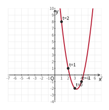
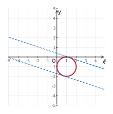
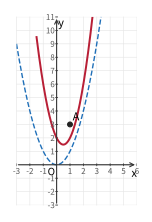

ホーム ＞ 数学C ＞ 媒介変数表示・極座標
別冊章末問題の解答
1. 媒介変数 \(t\) で表された曲線 \(x=- t + 3,\ y=2 t^{2} + t - 2\) を、\(x,\ y\) の方程式で表せ。
\(t\) を \(x\) で表す
\[x=- t + 3\ \Rightarrow\ t=- x + 3\]\(y\) に代入する
\[y=2 t^{2} + t - 2=- x + 2 \left(- x + 3\right)^{2} + 1\]展開して整理する
\[y=2 x^{2} - 13 x + 19\]\(t\) はすべての実数をとり \(x\) もすべての実数をとるので、放物線全体になる。

（例題1の型）
【答案】
\[y=2 x^{2} - 13 x + 19\]答
2. 点 \(P(x,y)\) が円 \((x-\left(1\right))^2+(y-\left(-1\right))^2=1\) 上を動くとき、\(x+3y\) の最大値と最小値を求めよ。
円を媒介変数で表す
円 \((x-\left(1\right))^2+(y-\left(-1\right))^2=1\) 上の点は
\[x=1+1\cos\theta,\quad y=-1+1\sin\theta\]1次式を \(\theta\) で表す
\[x+3y=1+1\cos\theta+3\left(-1+1\sin\theta\right)\]三角関数の合成
\[x+3y=-2+1\left(\cos\theta+3\sin\theta\right)=-2+\sqrt{10}\sin(\theta+\alpha)\]\(\sqrt{1+3^2}=\sqrt{10}\) を使った。
最大・最小
\(-1\leqq\sin(\theta+\alpha)\leqq1\) より
\[\text{最大値 }-2 + \sqrt{10},\qquad \text{最小値 }- \sqrt{10} - 2\]
（例題2の型）
【答案】
\[\text{最大 }-2 + \sqrt{10},\ \text{最小 }- \sqrt{10} - 2\]答
3. (1) 極座標が \(\left(2,\ \dfrac{3 \pi}{2}\right)\) である点の直交座標を求めよ。(2) 直交座標が \(\left(0,\ 3\right)\) である点の極座標 \((r,\theta)\) を、\(r>0,\ 0\leqq\theta<2\pi\) で求めよ。
極座標→直交座標
\(x=r\cos\theta,\quad y=r\sin\theta\)。
\[x=2\cos\dfrac{3 \pi}{2}=0,\quad y=2\sin\dfrac{3 \pi}{2}=-2\]\[\left(0,\ -2\right)\]直交座標→極座標：\(r\)
\(r=\sqrt{x^2+y^2}\)。
\[r=\sqrt{\left(0\right)^2+\left(3\right)^2}=3\]直交座標→極座標：\(\theta\)
\(\cos\theta=\dfrac xr,\ \sin\theta=\dfrac yr\)。
\[\cos\theta=0,\quad \sin\theta=1\ \Rightarrow\ \theta=\dfrac{\pi}{2}\quad(0\leqq\theta<2\pi)\]\[\left(3,\ \dfrac{\pi}{2}\right)\]（例題3の型）
【答案】
\[\text{(1) }\left(0,\ -2\right)\quad\text{(2) }\left(3,\ \dfrac{\pi}{2}\right)\]答
4. 極方程式 \(r^2\cos2\theta=8\) が表す曲線を、直交座標 \(x,\ y\) の方程式で表せ。また、どんな図形か答えよ。
置き換えの準備
\(x=r\cos\theta,\ y=r\sin\theta,\ x^2+y^2=r^2\) を使う。\(\cos2\theta=\cos^2\theta-\sin^2\theta\) より
\[r^2\cos^2\theta-r^2\sin^2\theta=8\]\(x,\ y\) で書く
\[x^2-y^2=8\]整理して図形を判定
\[x^2-y^2=8\]\(\text{双曲線 }x^2-y^2=8\)。
（例題4の型）
【答案】
\[x^2-y^2=8\ \ (\text{双曲線 }x^2-y^2=8)\]答
5. 点 \(A(1,\ 3)\) と放物線 \(y=x^2\) 上の動点 \(P\) を結ぶ線分 \(AP\) の中点 \(M\) の軌跡の方程式を求めよ。
動点を媒介変数 \(t\) で表す
\(P\) は放物線 \(y=x^2\) 上なので \(P(t,t^2)\)。
中点 \(M\) の座標
\[M\left(\dfrac{t+\left(1\right)}{2},\ \dfrac{t^2+\left(3\right)}{2}\right)\]\(M(x,y)\) とおく。
\[x=\dfrac{t+\left(1\right)}{2},\quad y=\dfrac{t^2+\left(3\right)}{2}\]\(t\) を消去する
\[t=2x-\left(1\right)\ \Rightarrow\ y=\dfrac{(2x-\left(1\right))^2+\left(3\right)}{2}\]\[y=2 x^{2} - 2 x + 2\]\(t\) はすべての実数なので、放物線全体。

（例題5の型）
【答案】
\[y=2 x^{2} - 2 x + 2\]答